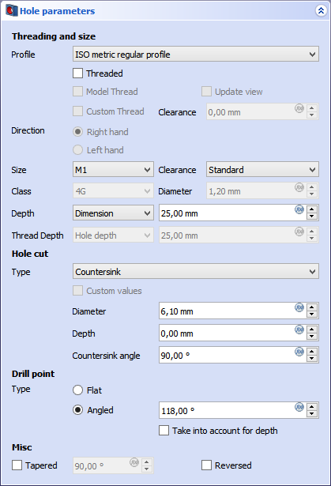

PartDesign Hole/bg
|
|
| Menu location |
|---|
| Part Design → Отнемащи функции → Отвор |
| Workbenches |
| PartDesign |
| Default shortcut |
| None |
| Introduced in version |
| 0.17 |
| See also |
| PartDesign Pocket |
Описание
Инструментът  Отвор от работна маса Дизайн на части създава една или повече дупки от кръговете и дъгите на избрана скица. Ако има дъги, те трябва да са част от затворени контури. Всички недъгови/кръгови същности се игнорират, но все пак трябва да образуват затворени контури. Могат да бъдат зададени много параметри като резба и размер, прилягане, тип отвор (countersink, counterbore, straight) и др.
Отвор от работна маса Дизайн на части създава една или повече дупки от кръговете и дъгите на избрана скица. Ако има дъги, те трябва да са част от затворени контури. Всички недъгови/кръгови същности се игнорират, но все пак трябва да образуват затворени контури. Могат да бъдат зададени много параметри като резба и размер, прилягане, тип отвор (countersink, counterbore, straight) и др.
Центровете на кръговете и дъгите се използват за позициониране на дупките, но моля, имайте предвид, че техните радиуси не се вземат предвид. Генерираните дупки ще бъдат идентични, дори ако радиусите варират.

On the left a cross-section of countersunk holes, on the right a cross-section of counterbored holes
Usage
- There are several ways to invoke the tool:
- Press the
 Hole button.
Hole button. - Select the Part Design → Subtractive Features → Hole option from the menu.
- Press the
- If an existing unused sketch is found, it will be used automatically. If more than one sketch is found, a Select Attachment panel appears to make a selection. Alternatively, a sketch can be selected before launching the Hole command.
- Define the Hole Parameters, that are described in section Options.
- Press OK.
Options


Depending on the specified options, some fields will be active or stay disabled.
Profile and Placement
- Base profile types: Defines the basis on which the hole is drilled.
- Circles and arcs
- Points, circles and arcs (default)
- Points
- Start: Sets where the hole begins. By default the hole starts at the sketch plane. introduced in 26.3
- Profile plane (default): The hole starts directly at the sketch's attachment plane.
- Offset: The hole starts at a numeric distance from the sketch plane, entered in the Start Offset field.
- Reference: The hole starts at a face, datum plane, or sketch selected with the Select reference button, set in the Start Reference field.
Hole
- Profile:
- If set to None, no threading info is defined, and the diameter needs to be set manually.
- When set to a supported standard the diameter and other parameters can be set automatically.
- Threaded: Only available if Profile is not None
- If checked, the provided diameter will be the recommended drill size for post-processing with a cutting tap.
- If unchecked, the diameter is set according to Clearance to pass-through a thread without contact.
- Model Thread: Only available if threaded
- If checked a real thread is modeled. This consumes much computing power and is usually not used for models, except for display purposes or sometimes for 3D prints. If it is used, it is advised to check it as one of the last actions done to the model, because it will increase recomputation time significantly.
- Cosmetic Thread: Only available if threaded introduced in 26.3
- If checked, a thread texture is displayed without modeling the thread geometry. This is useful for visualizing threaded holes while avoiding the recomputation cost and file size increase of Model Thread. Cosmetic Thread and Model Thread are mutually exclusive.
- Direction: Only available if threaded
- Sets the thread direction as Right Hand or Left hand.
- Size: Only available if threaded
- Sets the thread size. Requires Profile to not be None
- Clearance: Only available if non-threaded
- Determines the distance from the thread crest to the side of the hole. Can be understood as how tight a bolt will pass-through.
- For ISO threads the diameters are according to the ISO 273 standard
- For UTS they are calculated using a rule of thumb because there is no norm defining them.
- Class: Defines the tolerance class.
- Diameter: Defines the hole diameter, if the Profile is set to None.
- Depth: Depth of the hole from the sketch plane.
- Dimension: Enables a field to enter a value.
- Through All: Will cut the hole through the whole Body
- To reduce the file size, do not use Through All if Model Thread is checked, specify a minimal depth instead.
Depth type
- Dimension: A value must be given in Depth field.
- Through All: Will cut the hole through the whole Body.
Hole type
- Hole Type: None means no cut, other types are the various norms for screws and the generic types Counterbore, Countersink and Counterdrill. ISO and DIN 7984 models appear if Profile receives an ISO or DIN selection.
- Head Diameter: Sets the upper diameter (at the sketch plane) for the hole cut.
- Head Depth: The depth is defined differently depending on the Hole Type:
- For a Counterbore, it is the depth of the hole cut, measured from the sketch plane.
- For a Countersink, it is the depth of the screw head top below the sketch plane.
- For a Counterdrill, it is the depth of the cylindrical part of the hole cut.
- Countersink angle: Angle of the conical hole cut. Only applicable for countersinks, counterdrills, ISO 2009, ISO 7046, ISO 10642 profiles.
Drill point
- Drill angle: if checked, a field appears where the angle of the drill point can be defined.
- Include in depth will subtract the conical height from the Dimension. So if for example Dimension is 7.00 and the option is not used, the cylindrical part of the hole will be 7.00 and the depth necessary for the conical part is added to the hole depth. If the option is used, the overall hole depth including the conical point will be 7.00.
Misc
- Tapered: sets a taper angle to the hole. Value is calculated from the sketch plane normal.
- 90 degrees sets a straight hole.
- Under 90 generates a smaller hole radius at the end, larger at the start.
- Over 90 generates a larger hole radius at the end, smaller at the start.
- Switch direction: reverses the hole extrusion direction. The default direction is the mapping direction of the hole sketch to its attachment.
Operation
Sets the boolean operation used to combine the hole with the base solid. introduced in 26.3
- Subtraction (default): the hole removes material from the base solid, as in previous versions.
- Common: the hole keeps only the volume shared between the hole's swept profile and the base solid, discarding everything else.
Preview
- Show final result: tbd
- Show preview overlay: tbd
Properties
Much of the Data properties are the same as those shown in Options.
- ДанниLabel: name given to the object, this name can be changed at convenience.
- ДанниRefine: true or false. If set to true, cleans the solid from residual edges left by features. See Part RefineShape for more details.
- ДанниOperation (
Enumeration): sets the boolean operation used to combine the feature with the base solid (Subtraction, Common), see Options. introduced in 26.3

Start
- ДанниStart Type (
Enumeration): sets how the hole start is defined (Profile plane, Offset, Reference), see Options. introduced in 26.3 - ДанниStart Offset (
Length): distance between the sketch plane and the start of the hole. Only used if ДанниStart Type is Offset. introduced in 26.3 - ДанниStart Reference (
LinkSub): a face, plane, or sketch the hole starts from. Only used if ДанниStart Type is Reference. introduced in 26.3
Limitations
- By default, the hole feature extrudes below the sketch plane. If the solid lies on the XY_Plane, and the hole sketch is attached to the XY_Plane, it will try to extrude away from the solid and seemingly produce no result. In such a case, the option Reversed needs to be set; alternatively the sketch can be mapped to the bottom face of the solid.
Cut Type Definitions
Cut types (screw-types) are defined in json files. There is a set of files distributed with FreeCAD, but users can create their own definitions. Files are searched in <UserAppDataDir>/PartDesign/Hole. The UserAppDataDir can be found by typing App.getUserAppDataDir() in the Python Console.
The file should contain:
- name: The name of the definition. This must be unique as it will be used as identifier in the FreeCAD UI and as internal index.
- cut_type: Either
countersinkorcounterbore. - thread_type: Either
metricormetricfine. - angle: The angle of a countersink (not necessary for counterbore).
- data: A list of sizes, consisting of:
- thread: Name of thread known to FreeCAD.
- diameter: The diameter of the cut.
- depth: Depth of the counterbore (not necessary for countersink).
Example:
{
"name": "DIN 7984",
"cut_type": "counterbore",
"thread_type": "metric",
"data": [
{ "thread": "M2", "diameter": 4.3, "depth": 1.6 },
{ "thread": "M2.5", "diameter": 5.0, "depth": 2.0 },
…
]
}
- Helper tools: New Body, New Sketch, Attach Sketch, Edit Sketch, Validate Sketch, Check Geometry, Sub-Shape Binder, Clone
- Modeling tools:
- Additive tools: Pad, Revolution, Additive Loft, Additive Pipe, Additive Helix, Additive Box, Additive Cylinder, Additive Sphere, Additive Cone, Additive Ellipsoid, Additive Torus, Additive Prism, Additive Wedge
- Subtractive tools: Pocket, Hole, Groove, Subtractive Loft, Subtractive Pipe, Subtractive Helix, Subtractive Box, Subtractive Cylinder, Subtractive Sphere, Subtractive Cone, Subtractive Ellipsoid, Subtractive Torus, Subtractive Prism, Subtractive Wedge
- Boolean: Boolean Operation
- Dress-up tools: Fillet, Chamfer, Draft, Thickness, Defeaturing
- Transformation tools: Mirror, Linear Pattern, Polar Pattern, Circular Pattern, Path Pattern, Point Pattern, Multi-Transform, Scale
- Additional tools: Shape Binder, Involute Gear, Sprocket, Shaft Design Wizard
- Context menu: Set Tip, Move Object To…, Move Feature After…, Toggle Suppressed
- Preferences: Preferences, Fine tuning
- Getting started
- Installation: Download, Windows, Linux, Mac, Additional components, Docker, AppImage, Ubuntu Snap
- Basics: About FreeCAD, Interface, Mouse navigation, Selection methods, Object name, Preferences, Workbenches, Document structure, Properties, Help FreeCAD, Donate
- Help: Tutorials, Video tutorials
- Workbenches: Std Base, Assembly, BIM, CAM, Draft, FEM, Inspection, Material, Mesh, OpenSCAD, Part, PartDesign, Points, Reverse Engineering, Robot, Sketcher, Spreadsheet, Surface, TechDraw, Test Framework
- Hubs: User hub, Power users hub, Developer hub